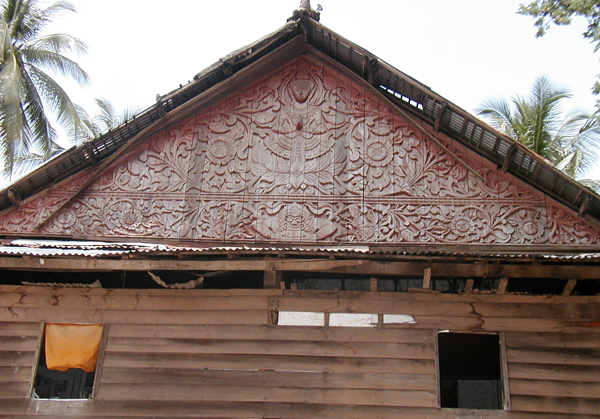
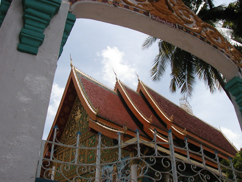
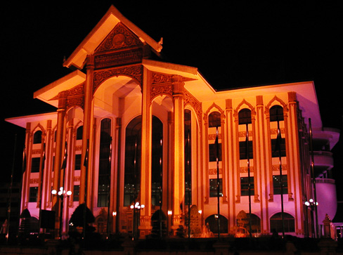
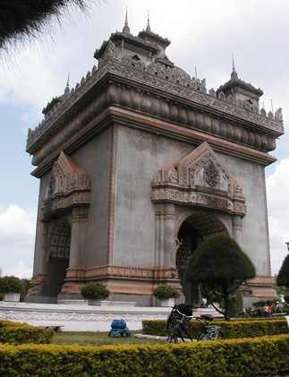
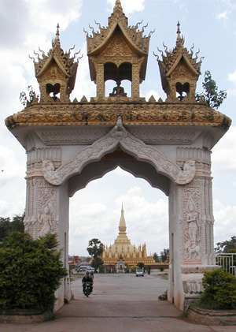
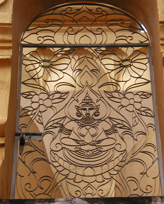
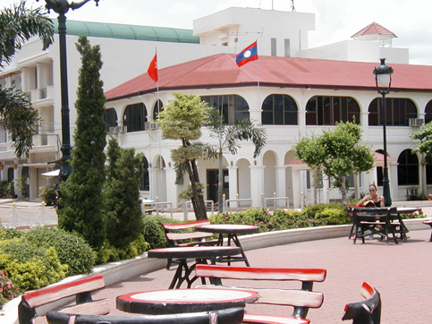
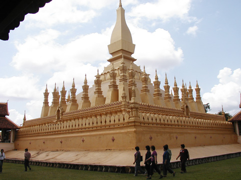
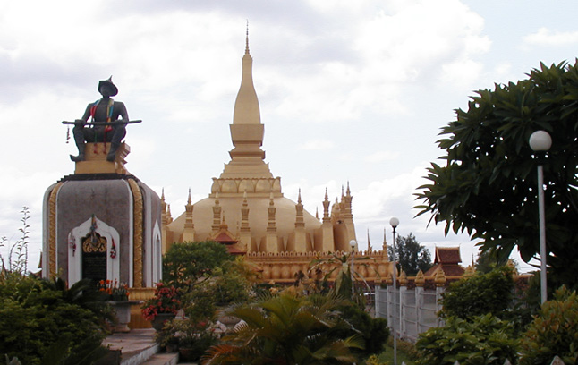
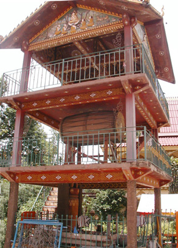

Laos Trav-E-Logs©
| Vientiane |  |
| back: Savannakhet to Wat Phu | Interesting design on side of dorm in (Buddhist) Monastery. Does the figure at bottom-center show strong Hindu influence? |
================================= Spent a couple days in Vientiane, renting a bike to tour one of the smallest, laid-back capitals in the world. =================================
Jun 14 - 15, 2003

The Architecture here still intrigues me, inviting many photos. Took the left photo at the entrance to the Inpeng Temple. Came across the building in the right photo on an evening walk, but it was not identified in the travel guide. Someone said several posters were advertising plays and operas.
|  |  |  |
On Sunday morning, rode my bicycle up the main street of town to Pha That Luang, passing the Victory Arch on the way. The travel guide says the U.S.A. gave Laos enough concrete to construct a new runway for the airport, but the Lao Government decided this monument was a more important project. On the way back to the guest house, about 10:30 in the morning, I rode the bicycle zigzag down the center of main street for over a mile, as there was no traffic. In what other capitol in the world can this fete be accomplished?

Above left: small park in city center is ideal place to hold meetings, read a book, or have lunch. Above right: Stupa at Pha That Luang.

Another view at Pha That Luang in the left photo. Several of the temple and monastery grounds have drum towers as shown in the right photo.
Happy travels to all of you!
Bill
------------------------------
"Travel is Fatal to Bigotry, Prejudice, and Narrow-minded ness" .... attributed to Mark Twain
| next: Luang Prabang |
| back: Savannakhet to Wat Phu |